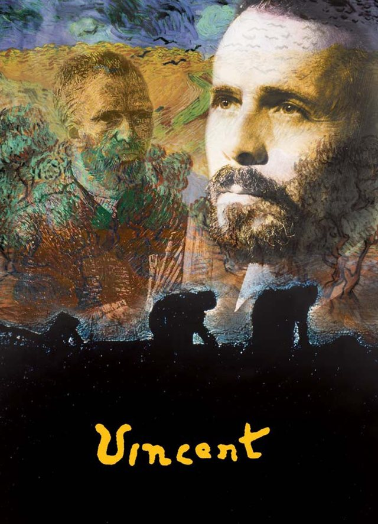

Vincent
By Leonard Nimoy · starring Jim Jarrett
Paris, 1890. A week after Vincent van Gogh's death, his brother Theo rents a hall to tell the story he could not speak at the funeral, with Vincent's paintings projected behind him. Seen by a quarter of a million people on four continents.